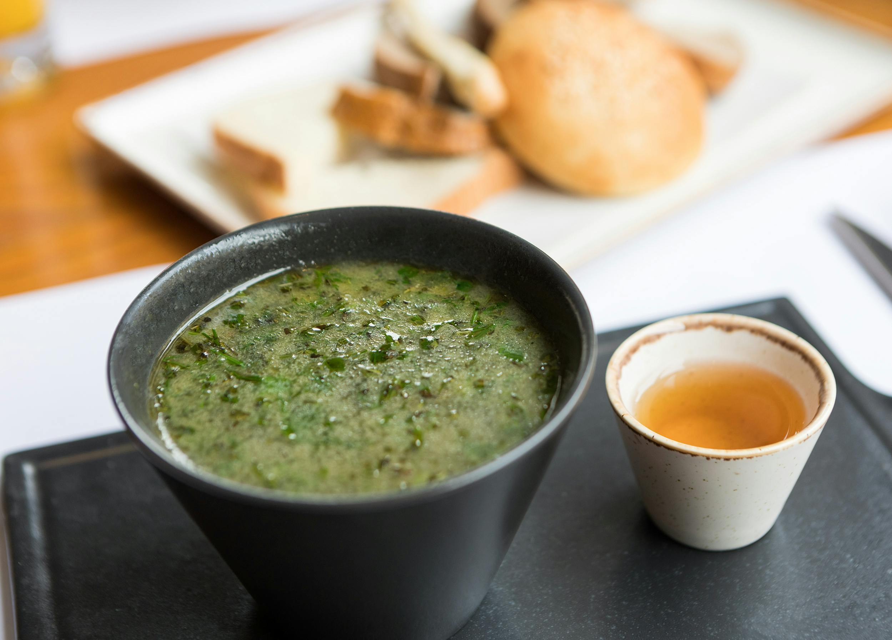

- 500 g brokkoli (friss vagy fagyasztott)
- 1 közepes fej vöröshagyma
- 2 gerezd fokhagyma
- 1 közepes krumpli (a sűrítéshez)
- 1 liter zöldségalaplé
- 200 ml tejszín (vagy kókusztejszín, ha laktózmentes változatot szeretnél)
- 2 evőkanál olívaolaj vagy vaj
- Só és bors ízlés szerint
- Friss petrezselyem vagy reszelt sajt a tálaláshoz